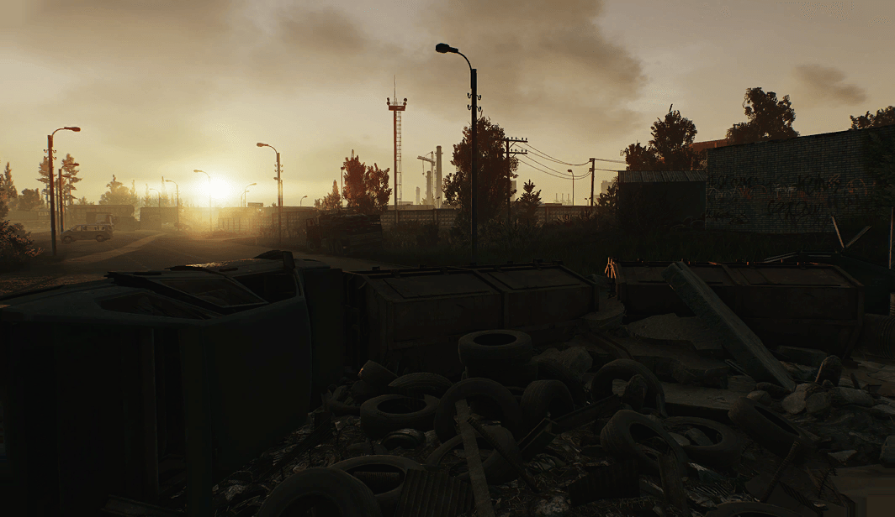
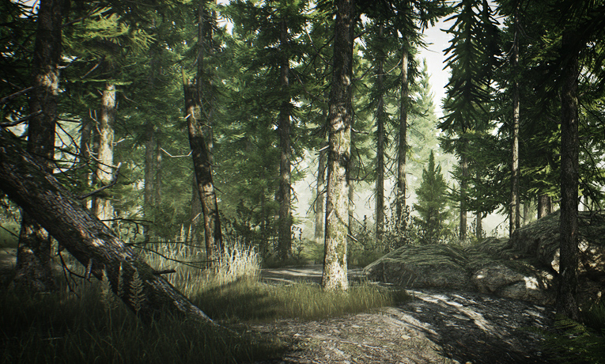
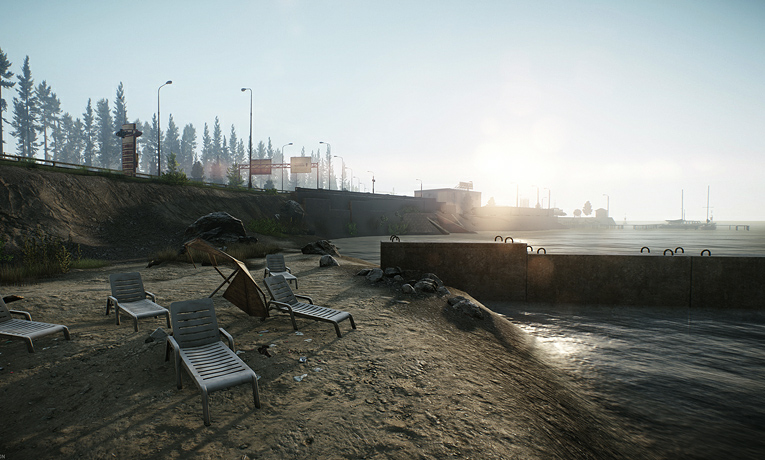
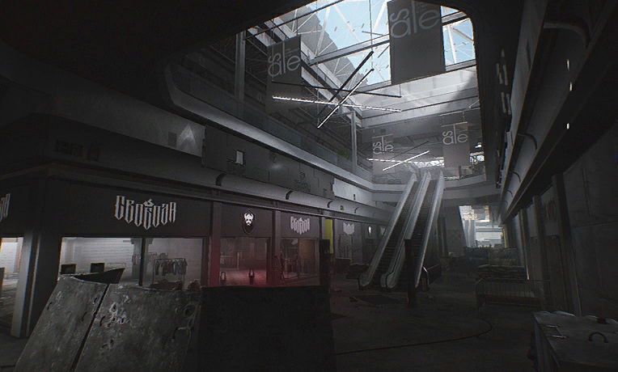
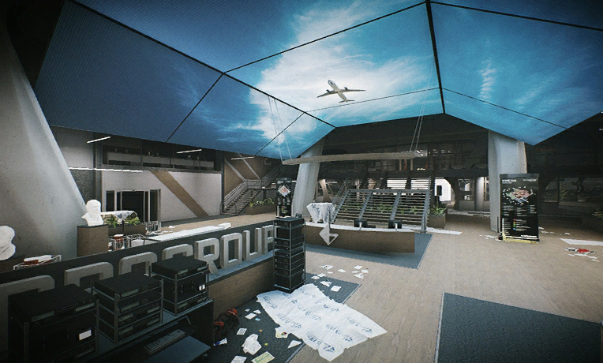
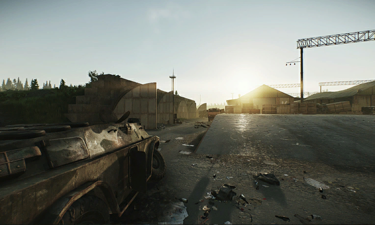
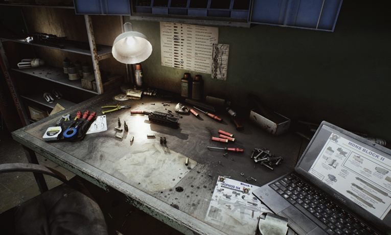
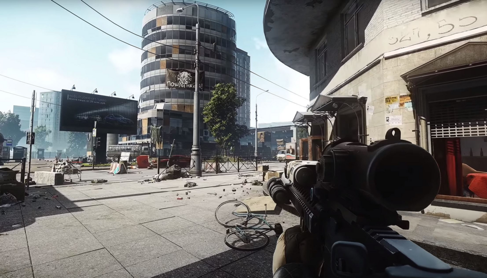
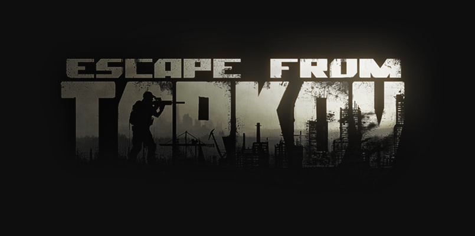

Tarkovon található pályák/helyek
Az Escape From Tarkov játék összes, játékosként bejárható pályái és helyei vannak felsorolva,
kiegészítő információkkal ellátva. Ahol a pálya hossza egyszer van feltüntetve ott éjszaka és nappal
is ugyan az.
| Kép | Név | Leírás | Hossz | Játékos szám |
Ellenségek | Állapot |
|---|---|---|---|---|---|---|

|
Factory | Egy kis, gyors tempójú CQC térkép egy többszintes ipari gyárban, alagutakkal és felüljárókkal. | Nappal: 20p
Éjszaka: 25p |
4-6 | Tagilla (BOSS)
Scav-ek |
Released |
|  | Customs | A Customs, Tarkov ipari negyedében játszódik, és egy önraktárat, egy folyót egy híddal, egy két- és háromemeletes kollégiumot, benzinkutakat, raktárakat, építési területeket és néhány katonai ellenőrzőpontot tartalmaz. | 45p | 8-12 | Reshala (BOSS)
Scav-ek Cultist (Csak este) |
Released |
|  | Woods | Egy közepes méretű erdőrészlet néhány nyílt mezővel, kis dombokkal, egy fakitermelő táborral és néhány bunkerrel. | 50p | 8-14 | Shturman (BOSS)
Scav-ek |
Released |
|  | Shoreline | Egy nagy térkép, amely egy partvonal mentén fut. Egy kisváros, egy elsüllyedt falu, egy benzinkút, egy móló, egy rádióállomás és, ami a legfontosabb, egy nagy, 3 emeletes gyógyfürdő található rajta. A gyógyfürdőben van föld alatti medence, egy edzőterem, teniszpályák és egy színház is. | 50p | 10-13 | Sanitar (BOSS)
Scav-ek |
Released |
|  | Interchange | Háromszintes bevásárló komplexum, amely a bevásárlóközpontokra jellemző különböző típusú üzleteket, valamint 3 nagy horgonyzó üzletet tartalmaz: IDEA, OLI és Goshan. Földalatti parkolóval, az épületet körbejáró utakkal és gokartpályával is rendelkezik. | 45p | 10-14 | Killa (BOSS)
Scav-ek |
Released |
|  | The Lab | A TerraGroup Labs földalatti laboratóriumkomplexum egy titkos objektum Tarkov központja alatt. Hivatalosan ez a kutatóközpont nem létezik, és az adatfoszlányok alapján kutatás-fejlesztési, tesztelési és szimulációs projektekkel foglalkozik a kémia, a fizika, a biológia és a csúcstechnológia területén. | 40p | 6-10 | Scav raider-ek | Released |
|  | Reserve | A Szövetségi Állami Tartalékügynökség titkos bázisa, amely a városi legendák szerint évekig elegendő készletet tartalmaz: élelmiszert, gyógyszereket és egyéb erőforrásokat, amelyek elegendőek egy teljes atomháború túléléséhez. | 50p | 9-12 | Glukhar (BOSS)
Scav-ek Scav raider-ek |
Released |
|  | Hideut | Eredetileg egy elhagyatott és zsúfolt bunker volt, ahol nem volt semmilyen eszköz az élet fenntartására. A játékos különböző Hideout modulokat építhet és fejleszthet, mint például az áramfejlesztő, vízgyűjtő rendszer, szellőztető, orvosi kezelőhely, hírszerző központ, fűtés, fürdőszoba és más fejlett modulok. | Released | |||
|  | Streets of Tarkov | Tarkov belvárosa házak, bankok, bevásárlóközpontok és szállodák, valamint minden egyéb szolgáltatás, amire egy virágzó metropolisznak szüksége lehet. | Unreleased Release planned early 2022 |
|||
|  | Suburbs | Tarkov külvárosi és ingázó területei minden infrastruktúrát és kényelmet tartalmaznak a hosszú és boldog élethez. | Unreleased | |||
| Town | Verkhneye városi település egy tengerparti kisváros, amelyet a helyiek kivételes kertészeti és szabadtéri pihenőhelyként kedvelnek. | Unreleased | ||||
| Lighthouse | A Dalniy-foknál álló világítótorony a város számára fontos stratégiai pozíció volt. A konfliktus kitörésekor az USEC a világítótorony területét használta leszállóhelyként, és ezzel felkeltette a BEAR erők figyelmét, akik pokolian elszántak voltak az ellenséges PMC-k erőinek nullára csökkentésére. | Unreleased Release planned early 2022 |
||||
| Terminal | A kikötői zóna nagy része, amely a pletykák szerint a tartalék Emercom kivonási pont. | Unreleased | ||||
| Arena | Nem része a menekülésnek. | Unreleased | ||||
| Private Sector | Magánlakóövezet, Tarkov felsőbb osztályú polgárainak nyaralóival beépítve. A kialakuló káosz első heteiben menekültek gyűjtőtáboraként szolgált. | Unreleased |